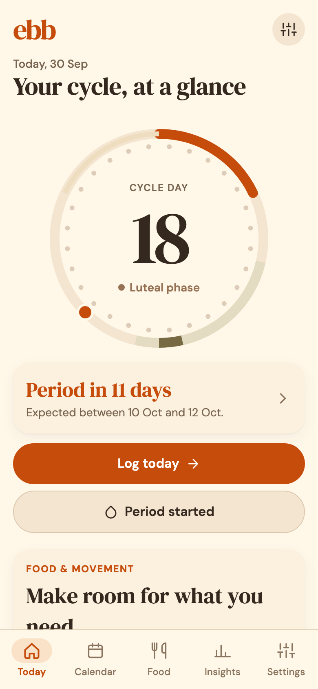
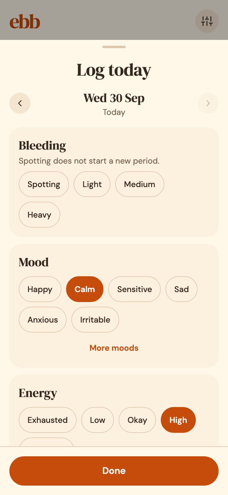
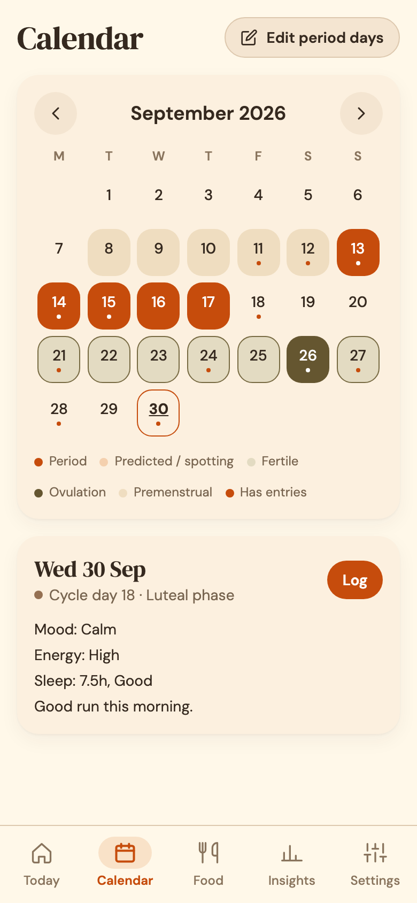
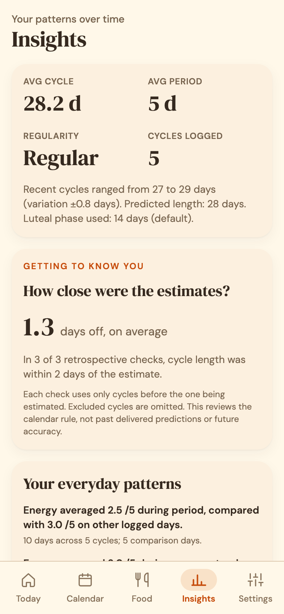
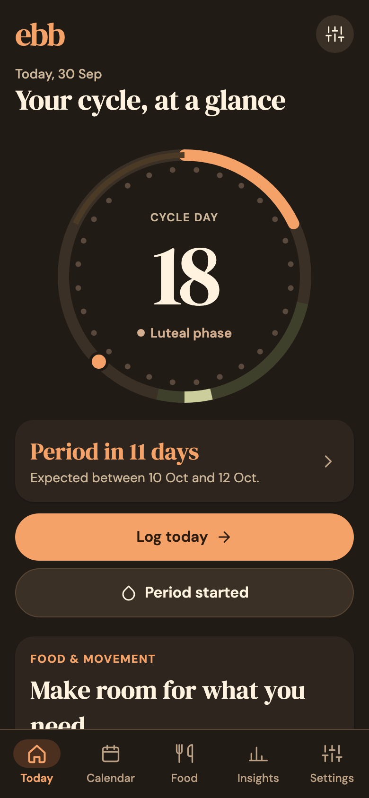

Periods and predictions
Flow, spotting and a one-tap "period started". The next period comes with a realistic date range and an honest note on how sure Ebb is.
Ebb is a cycle and wellbeing diary that keeps everything on your phone. Track periods, symptoms and moods, see predictions that learn from your own history, and never pay for your own data.
Beta testing is underway. Public App Store and Google Play releases are on the way.




The popular cycle apps keep their best insights behind a yearly plan. Ebb gives you all of it, with nothing held back and nothing to upgrade to.
Approximate US list prices for yearly plans as reported in 2026 reviews. Prices vary by country and change often; each of these apps also has its own strengths.
Flow, spotting and a one-tap "period started". The next period comes with a realistic date range and an honest note on how sure Ebb is.
Over 30 symptoms, moods, energy, pain and its impact on your day, sleep, sex and libido, pill, medication and your own custom tags.
Average cycle and period length, regularity, symptoms that return before your period, and a look back at how close past estimates were.
Basal temperature with shift detection, ovulation tests and cervical mucus. Modes for trying to conceive, avoiding pregnancy or hormonal birth control.
Gentle meal and activity ideas for each phase, and a meal diary. On Android, an optional on-device model can suggest what is on your plate.
Period, fertile window, pill and temperature reminders, worded so nothing private appears on your lock screen.
Cycle data is some of the most personal information there is. Ebb was built so there is nothing to leak, sell or hand over: no server holds your diary.
No pink, no flowers, no clutter. Real screens from the current build, shown with sample data.

Years of logs are too valuable to leave behind. Ebb reads them in, shows you what it found, and keeps anything you already logged by hand.
Periods, symptoms, moods, discharge, tests, temperature, notes and more. Anything unfamiliar is kept as a custom symptom.
On iPhone, Ebb can read what Flo, Clue or Apple's Cycle Tracking saved to Health: periods, spotting, tests, symptoms and basal temperature.
Read the code, build it yourself, translate it, or fork it for your own community. Ebb is written in TypeScript with Expo and React Native, so one codebase runs on iPhone and Android.
# Try the app in your browser
$ git clone https://github.com/TjebbeHB/ebb.git
$ cd ebb
$ npm ci
$ npm run web
# Or on a phone or simulator
$ npm run android
$ npm run iosEbb is in active development and being tested on real phones. Here is what works today.
| Capability | Android | iOS |
|---|---|---|
| Cycle diary, check-ins and insights | Ready | Ready |
| Import from Flo files and Ebb backups | Ready | Ready |
| Health integration | Health Connect: sleep, resting heart rate | Apple Health: cycle records, sleep, resting heart rate |
| Manual meal diary with photos | Ready | Ready |
| On-device meal photo recognition | Built, device testing | Not yet |
| Store release | Test builds | TestFlight being prepared |
There is no catch. No subscription, no ads, no selling data, and there is no server to pay for because your diary lives on your phone. Ebb is a free project released under the MIT license.
No. Predictions are estimates based on your logged dates and averages. Ebb is not a medical device and does not diagnose, treat or prevent any condition. Talk to a healthcare professional about contraception.
Because nothing is stored online, your diary is only as safe as your phone. Export a backup file from Settings → Data now and then, and keep it somewhere you trust. You can import it on a new phone.
Ebb is being tested before its store release. You can already run it from the source code on GitHub, and store links will appear on this page once the beta is open.
Ebb predicts from your own history and widens its range when cycles vary, telling you plainly when a date is a rough guide. You can exclude unusual cycles. Dedicated perimenopause and pregnancy modes are not included yet.
Yes, please. Report bugs or ideas in GitHub issues, using made-up example data rather than your own health records. Translations, design feedback and code are all welcome.
Free for anyone who needs it, and open for anyone who wants to make it better.